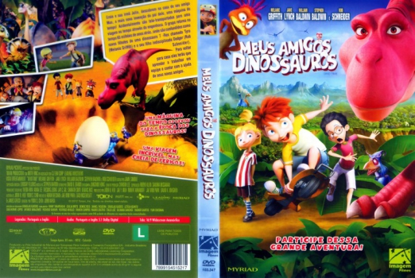

Outro Título:Dino Time
País:United States, 85 minutos
Idiomas falados:Inglês, Português
Gênero(s):Animação, Aventura, Comédia, Família
Diretor(s):Yoon-suk Choi, John Kafka
Escritor(es):Zachary Rosenblatt, Jae Woo Park, Adam Beechen, James Greco
Codec:MPEG-2 (DVD)
Número: 5813


Certificado:
Sinopse:
Ernie e sua irmã Julia, descobrem na casa de seu amigo Max, a mais nova invenção do pai dele, uma máquina do tempo! Acidentalmente são tele-transportados para uma viagem no tempo através da engenhoca. O grupo retorna no tempo a 65 milhões de anos atrás, onde são confundidos como novos filhotes de uma dinossaura T -Rex chamada Tyra (Melanie Griffith) e o seu filho indisciplinado Dodger (Rob Schneider). Para voltar para casa eles terão que aprender a trabalhar em equipe e contar com a ajuda de seus novos amigos.
Elenco:


Tipo de mídia: DVD5,
Legendas: Inglês, Português, Sem Legendas
Alugado: Não
Tela: Anamorphic Widescreen